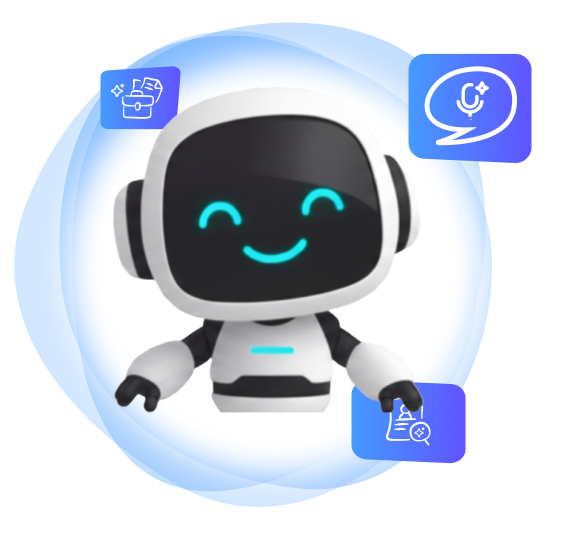
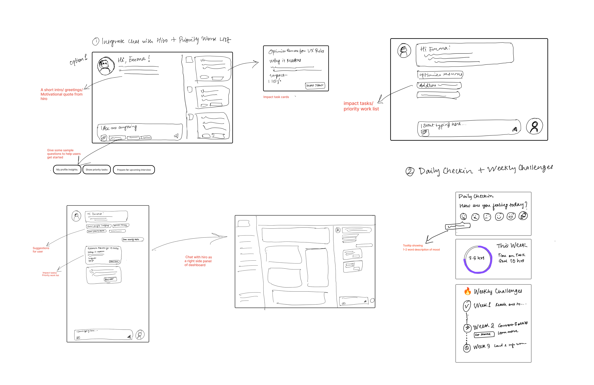

Designing Hirello.ai's
Foundation
How Early UX Insights Shaped a Product Pivot

How Early UX Insights Shaped a Product Pivot
Hirello.ai is an AI-driven career platform helping users navigate their job search intelligently. It combines guided workflows, data-driven insights, and a conversational AI assistant named Hiro to make career growth more efficient and human.
 My Role
My Role

When I joined Hirello.ai, the product existed only as an ambitious vision: an AI-powered copilot to guide users through their job search journey. As the founding Product Designer, I was responsible for transforming a 60-page vision document into tangible, intelligent interfaces.
My starting point was a 60-page vision document, dense with backend architecture, model choices, and technical implementation detail. Almost none of it was directly translatable into UX. My job was to extract the product intent buried inside it, and turn that into something a real user could navigate.
There was also an early tension to resolve: the founders were drawn to gamification: quests, streaks, reward loops. I believed this was the wrong direction for users who were already anxious and under pressure in their job search. A platform meant to guide and reassure shouldn't feel like a game. That conversation needed to happen early.
 The key question
The key question
"How do we make an AI career assistant feel like a trusted guide, not a tracker, and not a toy?"
Before committing to the first dashboard direction, I sketched different ways Hiro, daily check-ins, and weekly challenges could come together on the screen. This captures that exploratory phase.

 Goal: Create an AI-enabled workspace that organizes the job search.
Goal: Create an AI-enabled workspace that organizes the job search.
V1 was built around a hypothesis: if users could see their entire job search at a glance (pipeline, health score, tasks, and Hiro), they'd feel in control and know what to do next. The interface was designed to be comprehensive and visually clear, establishing the visual language and component system the team would build from.
Hiro AI Copilot
Your AI co-pilot guiding every step of the job-search journey
Prioritized Worklist
Surfaces the most impactful tasks so users always know what to do next

Job-Search Health
Current progress vs. target across all dimensions: resume, activity, interviews
Opportunity Pipeline
Every lead tracked across stages, from planning to interviews
 What 10 Users Told Us
What 10 Users Told UsOver 4 weeks, we interviewed 10 users across different stages of their job search. The visual design landed, but the experience didn't. Users weren't engaging with the pipeline or health score. Almost universally, the one thing they kept coming back to was the worklist. Everything else felt like noise.
"It looks great, but I don't know what to do here."
User Interview
"It feels more like a report than a coach."
User Interview
Users didn't need more information. They needed clearer direction.
The dashboard was showing them everything but guiding them nowhere.
After speaking with users, we redesigned the dashboard to feel more guided, actionable, and less overwhelming. Users struggled with the Opportunity Pipeline, so we removed it and expanded the worklist into a structured daily plan. The key insight driving V2: users needed to know not just what to do, but why it mattered. Every task now shows an Impact Score: a percentage showing how much completing it moves the needle on getting hired.

The worklist became a structured daily plan across three color-coded modules: Resume, Networking, and Interview Prep. Each task shows an Impact Score so users understand exactly why they're doing it, not just what to do next.
Removed the Opportunity Pipeline and health score widgets that users ignored. A quieter, more focused interface. Hiro and the daily plan take center stage, everything else steps back.

Across our 10 user interviews, a pattern kept surfacing that wasn't in the original product vision. Users weren't failing to track their applications. They were stuck because they didn't know the right people. The bottleneck wasn't organization. It was access.
I synthesized these findings and brought them to the founders directly. The data pointed to something bigger than a UI fix: Hirello's real opportunity wasn't job-search management. It was networking intelligence. I presented the case for a strategic shift, and the founders aligned.
From
Job-Search
Assistant
To
Networking
Intelligence

Refactoring the pipeline logic to track networking behaviors instead of just job applications.
Leveraging Hiro to draft warm introductions and automate follow-up reminders.
Moving beyond vanity metrics to measure relationship depth and connection strength.
This was the moment I understood what founding design really means: it's not just shipping screens. It's being close enough to users to see what the product should become before anyone else does, and having the conviction to make the case for it.
My research uncovered a critical business opportunity in networking, now the roadmap for Phase 2. To bridge the gap, we finalized Dashboard V2 as the foundational MVP.

Moving beyond static UI to define impact metrics and feedback animations.

Ensuring the modular grid can adapt to the upcoming networking features.

Creating motivation loops within AI-led experiences to prevent user burnout.
The product is still in active development, but the design decisions made here have already shaped the company's direction, team alignment, and engineering execution.
 Redirected the Roadmap
Redirected the RoadmapUser interviews I led directly changed the product's strategic direction. The networking intelligence pivot (now Hirello's Phase 2) came from patterns I identified and presented to the founders. That shift is now shaping the engineering roadmap.
Held the Product StandardPushed back on gamification features and bright/playful visual directions that didn't match the emotional state of job seekers. The professional, calm aesthetic the product now has was an argued position, not a default.
 Engineering-Ready Handoffs
Engineering-Ready HandoffsWorking directly with a team of 4 engineers, running design walkthroughs and maintaining a Figma file they build from. Reduced ambiguity in implementation by being the bridge between founder vision and technical execution.
Translated a 60-page technical vision document (with no UX structure) into a complete design system, component library, and two dashboard iterations that the engineering team is actively building from.
"The hardest part wasn't designing the product. It was knowing when to push back."
Working as a founding designer means navigating constant tension between founder enthusiasm and user reality. The gamification features, the color directions, the pipeline assumptions. These weren't bad ideas, they were just ideas that hadn't been tested yet. My job was to hold the bar, stay close to users, and make the case clearly. That's a different skill than just designing well.
"Advocate for the user, always."